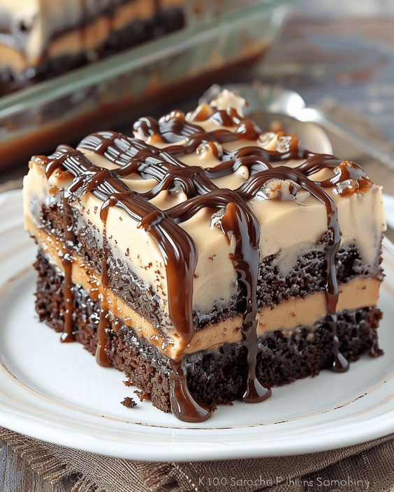

Cake
cake is becoming a favorite Filipino dessert due to its versatility, cultural fusion of local and Western flavors, and its central role in celebrations. Social media has boosted its appeal through visually stunning designs, while family traditions and increased availability from bakeries have made it more accessible. Together, these factors contribute to cake's popularity in Filipino culture.

- Basic Vanilla Cake Ingredients:
- 2 cups all-purpose flour
- 1 ½ cups granulated sugar
- ½ cup unsalted butter (softened)
- 1 cup milk (whole or buttermilk)
- 3 ½ teaspoons baking powder
- 1 teaspoon vanilla extract
- ½ teaspoon salt
- 3 large eggs
- Procedure
- Preheat Oven: Set to 350°F (175°C) and prepare two 9-inch cake pans.
- Mix Dry Ingredients: Whisk together flour, baking powder, and salt.
- Cream Butter and Sugar: Beat softened butter and sugar until fluffy.
- Add Eggs and Vanilla: Mix in eggs one at a time, then add vanilla.
- Combine Mixtures: Alternate adding dry ingredients and milk to the butter mixture.
- Pour and Bake: Divide batter into pans and bake for 25-30 minutes.
- Cool: Let cakes cool before transferring to a wire rack.
- Frost and Enjoy: Frost and decorate as desired.
RETURN HOME